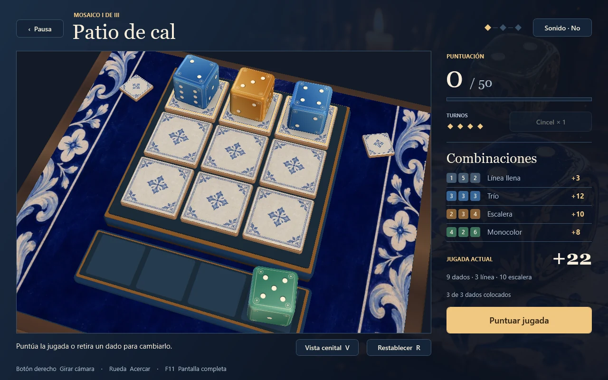

Mosaic Roll 3D
Haz rodar los dados de cerámica y combina sus caras para completar tres mosaicos.
Descargar para WindowsZIP · Windows de 64 bits · Sin instalación

En la mesa de juego
Extrae el ZIP y abre Mosaic Roll 3D.exe. Arrastra los dados al tablero, gira la cámara con el botón derecho y pulsa F11 para jugar a pantalla completa.